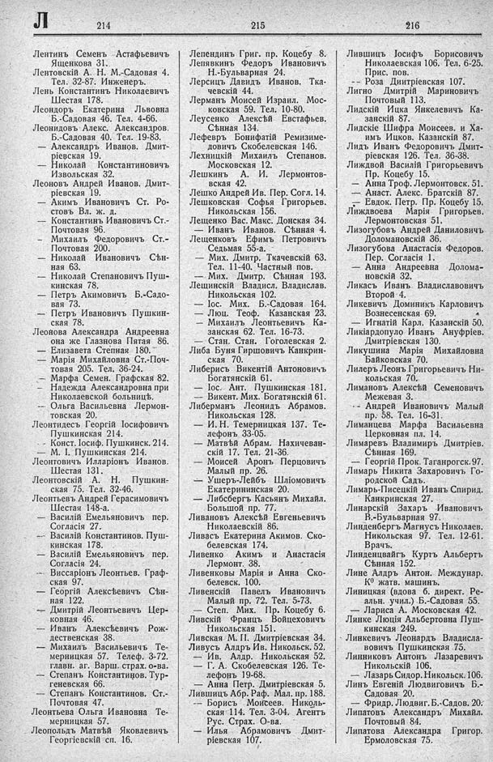

Лист источника 422
Скан

Распознанный текст
Л 214
Лентинъ Семенъ Астафьевичъ
Ященкова 31.
Лентовскій А. Н. Б.-Садовая 4.
Тел. 32-87. Инженеръ.
Лень Константинъ Николаевичъ
Шестая 178.
Леондоръ Екатерина Львовна
Б.-Садовая 46. Тел. 4-66.
Леонидовъ Алекс. Александров.
Б.-Садовая 40. Тел. 19-83.
— Александръ Иванов. Дмит-
ріевская 19.
— Николай Константиновичъ
Извольская 32.
Леоновъ Андрей Иванов. Дмит-
ріевская 19.
— Акимъ Ивановичъ Ст. Ро-
стовъ Вл. ж. д.
— Константинъ Ивановичъ Ст.-
Почтовая 96.
— Михаилъ Федоровичъ Ст.-
Почтовая 200.
— Николай Ивановичъ Сѣн-
ная 63.
— Николай Степановичъ Пуш-
кинская 78.
— Петръ Акимовичъ Б.-Садо-
вая 73.
— Петръ Ивановичъ Пушкин-
ская 78.
Леонова Александра Андреевна
она же Глазнова Пятая 86.
— Елизавета Степная 180.
— Марія Михайловна Ст.-Поч-
товая 205. Тел. 36-24.
— Марфа Семен. Графская 82.
— Надежда Александровна при
Николаевской больницѣ.
-- Ольга Васильевна Лермон-
товская 20.
Леонтидесъ Георгій Іосифовичъ
Пушкинская 214.
- - Конст. Іосиф. Пушкинск. 214.
- М. І. Пушкинская 214.
Леонтовичъ Илларіонъ Иванов.
Шестая 131.
Леонтовскій А. Н. Пушкин-
ская 75. Тел. 32-46.
Леонтьевъ Андрей Герасимовичъ
Шестая 148-а.
— Василій Емельяновичъ пер.
Согласія 27.
— Василій Константинов. Пуш-
кинская 178.
— Василій Емельяновичъ пер.
Согласія 24.
— Виссаріонъ Леонтьев. Граф-
ская 97.
— Георгій Алексѣевичъ Сѣн-
ная 122.
— Дмитрій Леонтьевичъ Цер-
ковная 46.
— Иванъ Алексѣевичъ Рож-
дественская 38.
— Михаилъ Васильевичъ Те-
мерницкая 57. Телеф. 3-72.
главн. аг. Варш. страх. о-ва.
— Степанъ Константинов. Тур-
геневская 66.
— Степанъ Константинов. Ст.-
Почтовая 47.
Леонтьева Ольга Ивановна Те-
мерницкая 57.
Леопольдъ Матвѣй Яковлевичъ
Георгіевскій сп. 16.
215
Лепендинъ Григ. пр. Коцебу 8.
Лепявкинъ Федоръ Ивановичъ
Н.-Бульварная 24.
Лерсицъ Давидъ Иванов. Тка-
чевскій 44.
Лерманъ Моисей Израил. Мос-
ковская 59. Тел. 10-80.
Леусенко Алексѣй Евстафьев.
Сѣнная 134.
Лефервъ Бонифатій Ремизиме-
довичъ Скобелевская 146.
Лехницкій Михаилъ Степанов.
Московская 12.
Лешкинъ А. И. Лермонтов-
вская 42.
Лешко Андрей Ив. Пер. Согл. 14.
Лешковская Софья Григорьев.
Никольская 156.
Лещенко Вас. Макс. Донская 34.
— Иванъ Иванов. Сѣнная 4.
Лещенковъ Ефимъ Петровичъ
Седьмая 55-а.
— Мих. Дмитр. Ткачевскій 63.
Тел. 11-40. Частный пов.
— Мих. Дмитр. Сѣнная 193.
Лещинскій Владисл. Владислав.
Никольская 102.
— Іос. Мих. Б.-Садовая 164.
— Люц. Теоф. Казанская 23.
— Михаилъ Леонтьевичъ Ка-
занская 62. Тел. 16-73.
— Стан. Стан. Гоголевская 2.
Либа Буня Гиршовичъ Канкрин-
ская 70.
Либерисъ Викентій Антоновичъ
Богатянскій 61.
— Іос. Ант. Пушкинская 181.
— Викент. Мих. Богатянскій 61.
Либерманъ Леонидъ Абрамов.
Никольская 128.
— И. Н. Темерницкая 137. Те-
лефонъ 33-05.
— Матвѣй Абрам. Нахичеван-
скій 17. Тел. 21-36.
— Моисей Аронъ Перцовичъ
Малый пр. 26.
— Ушеръ-Лейбъ Шліомовичъ
Екатерининская 20.
— Либсбергъ Касьянъ Михайл.
Большой пр. 77.
Ливановъ Алексѣй Евгеньевичъ
Николаевскій 86.
Ливасъ Екатерина Акимов. Ско-
белевская 174.
Ливенко Акимъ и Анастасія
Лермонт. 38.
Ливенковы Марія и Анна Ско-
белевск. 100.
Ливенскій Павелъ Ивановичъ
Малый пр. 72. Тел. 5-73.
— Степ. Мих. Пр. Коцебу 6.
Ливскій Францъ Войцеховичъ
Никольская 151.
Ливская М. П. Дмитріевская 34.
Ливусъ Алдръ Ив. Никольск. 52.
— Ив. Алдр. Никольская 52.
— Г. А. Скобелевская 126. Те-
лефонъ 19-68.
— Анна Петр. Дмитріевская 5.
Лившицъ Абр. Раф. Мал. пр. 188.
— Борисъ Моисеев. Николь-
ская 114. Тел. 3-04. Агентъ
Рус. Страх. О-ва.
— Илья Абрамовичъ Дмит-
ріевская 107.
216
Лившицъ Іосифъ Борисовичъ
Николаевская 106. Тел. 6-25.
Прис. пов.
-- Роза Диитріевская 107.
Лигно Дмитрій Мариновичъ
Почтовый 113.
Лидскій Ицка Янкелевичъ Ка-
занскій 87.
Лидскіе Шифра Моисеев. и Ха-
имъ Ицков. Казанскій 87.
Лидъ Иванъ Федоровичъ Дмит-
ріевская 126. Тел. 36-38.
Лиждвой Василій Григорьевичъ
Пр. Коцебу 15.
— Анна Троф. Лермонтовск. 51.
— Анаст. Алекс. Братскій 87.
— Евдок. Петр. Пр. Коцебу 15.
Лиждвоева Марія Григорьев.
Лермонтовская 51.
Лизогубовъ Андрей Даниловичъ
Доломановскій 36.
Лизогубова Анастасія Федоров.
Пер. Согласія 1.
— Анна Андреевна Долома-
новскій 32.
Ликасъ Иванъ Владиславовичъ
Второй 4.
Ликевичъ Доминикъ Карловичъ
Вознесенская 69.
— Игнатій Карл. Казанскій 50.
Ликіардопуло Иванъ Ануфріев.
Дмитріевская 130.
Ликушина Марія Михайловна
Байковская 70.
Лилеръ Леонъ Григорьевичъ Ни-
кольская 70.
Лимановъ Алексѣй Семеновичъ
Межевая 3.
-- Андрей Ивановичъ Малый
пр. 58. Тел. 16-31.
Лиманцева Марфа Васильевна
Церковная пл. 14.
Лимаревъ Владимиръ Дмитріев.
Сѣнная 169.
— Георгій Прок. Таганрогск. 97.
Лимарь Никита Захаровичъ Го-
родской Садъ.
Лимарь-Писецкій Иванъ Спирид.
Канкринская 27.
Линарскій Захаръ Ивановичъ
В.-Бульварная 97.
Линденбергъ Магнусъ Николаев.
Никольская 97. Тел. 12-61.
Врачъ.
Линденцвайгъ Куртъ Альбертъ
Сѣнная 152.
Лине Алдръ Антон. Междунар.
Кᵒ жатв. машинъ.
Линицкая (вдова б. директ. Ре-
альн. учил.) Б.-Садовая 55.
— Лариса А. Московская 42.
Линке Люція Альбертовна Пуш-
кинская 249.
Линкевичъ Леонардъ Владисла-
вовичъ Пушкинская 75.
Линниковъ Антонъ Лазаревичъ
Никольскій 106.
— Лазарь Сидор. Никольск. 106.
Линъ Евгеній Людвиговичъ Б.-
Садовая 20.
— Фридр. Людвиг. Б.-Садов. 20.
Липатовъ Александръ Михайл.
Почтовый 84.
Липатова Александра Григор.
Ермоловская 75.